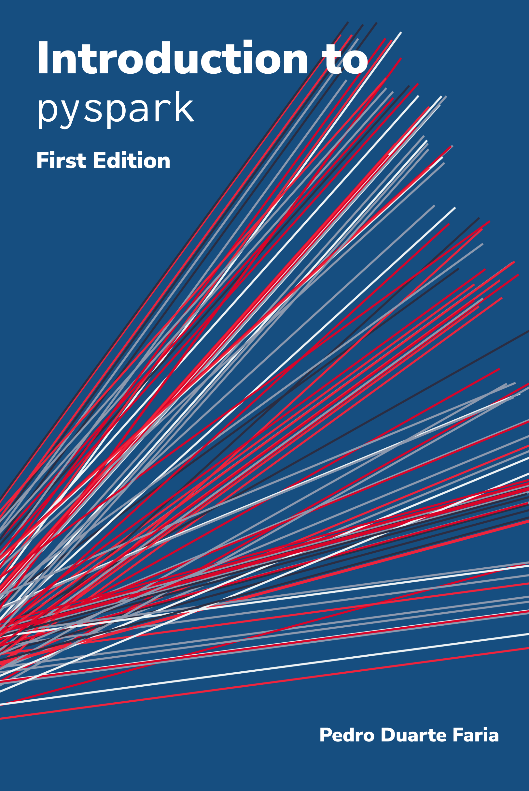

Still under construction üõ†Ô∏è ‚ö†Ô∏è!
This book is still under active construction and development! This means that not all chapters are ready yet, and the current contents might change in the close future. However, you can already read some of its parts by visiting its website.
About the book
In summary, this book aims to give a solid introduction (for python and not python users) to the pyspark package, and on how to use it to build Spark applications for data pipelines and interactive data analysis.
Although we have a good range of materials about Apache Spark in general, such as Damji et al. (2020) and Chambers and Zaharia (2018), we do not have much abundance of materials about the APIs of Spark in “foreign” languages, like the Python (pyspark) and R (SparkR) APIs.
The reason for this is simple: the Spark API have a consistent structure across all languages. As consequence, a general book about Spark can fairly cover all languages at once. In other words, Spark code in Scala can be easily translated into python code with pyspark. Because the structure of the code is very similar between all languages.
So why this book? First, python is a more popular and friendly language than Scala or Java. If the reader is not interested in learning Java or Scala, why show Java/Scala code to him? Is very important to focus solely on what interest the reader, specially if it is in a language that he is familiar with. Second, I had some time to spent, and a lot of practical experience with pyspark on production to share (so… why not write a book about it?).
References
Chambers, Bill, and Matei Zaharia. 2018. Spark: The Definitive Guide: Big Data Processing Made Simple. Sebastopol, CA: O’Reilly Media.
Damji, Jules, Brooke Wenig, Tathagata Das, and Denny Lee. 2020. Learning Spark: Lightning-Fast Data Analytics. Sebastopol, CA: O’Reilly Media.